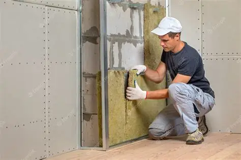

Publicado em:
O que é isolamento térmico e porque usar

O isolamento térmico é hoje um item essencial em projetos residenciais modernos. Vai muito além do conforto: impacta diretamente nas contas de energia, na durabilidade da construção, no conforto acústico e no valor do imóvel. Abaixo explicamos por que investir em isolamento compensa, quais materiais escolher, onde aplicar e como calcular retorno do investimento.
Por que o isolamento térmico importa?
O isolamento reduz a troca de calor entre o interior da casa e o ambiente externo. Em climas quentes diminui o ganho de calor; em climas frios reduz a perda de calor. Os benefícios são práticos e mensuráveis:
- Conforto térmico: ambientes com temperatura estável, sem picos de calor ou frio.
- Economia de energia: menos uso de ar-condicionado e aquecedores → contas mais baixas.
- Melhor acústica: redução sensível do ruído de chuva, trânsito e vizinhança.
- Valorização do imóvel: certificações energéticas e eficiência aumentam o preço de venda.
- Sustentabilidade: menor consumo energético reduz emissões de carbono.
Onde aplicar o isolamento térmico?
As áreas que mais influenciam no conforto e no consumo são:
- Telhado / cobertura: pode representar até 30–40% da troca térmica — alta prioridade.
- Paredes externas: fundamentais em fachadas expostas ao sol.
- Pisos (sobre laje / térreos): reduzem frio no piso e aumentam conforto.
- Janelas e portas: vidros duplos, caixilhos com corte térmico e vedação adequada.
- Sistemas HVAC: conduítes e dutos isolados evitam perdas térmicas.
Principais materiais de isolamento e características
1. Lã de vidro (fibra de vidro)
Boa performance térmica e acústica. Versátil para paredes, forros e telhados. Requer manta de proteção e caixa ventilada em alguns casos.
2. Poliestireno expandido (EPS / Isopor)
Leve e de baixo custo; usado em fachadas (ETICS), lajes e painéis. Tem boa resistência térmica, mas atenção à exposição ao fogo e umidade.
3. Poliuretano (espuma projetada ou painéis rígidos)
Alta eficiência térmica (baixa condutividade), aplicação direta em telhados e paredes; excelente para vedação de espaços complexos.
4. Cortiça
Material natural, sustentável, com bom desempenho térmico e acústico — usado em paredes e pisos. Mais caro, porém ecológico.
5. Telhas termoacústicas (sandwich)
Telhas com núcleo isolante (PU/EPS) entre chapas metálicas: fornecem isolamento térmico e acústico integrados — indicadas para coberturas que exigem manutenção baixa e bom desempenho.
Benefícios quantificados (o que esperar)
- Economia de energia: casas bem isoladas reduzem consumo de climatização entre 20% e 40% dependendo do clima e do sistema existente.
- Conforto térmico: manutenção de temperaturas internas mais estáveis (menor amplitude térmica diária).
- Conforto acústico: redução de ruído entre 20 a 50 dB conforme o material e espessura.
- Valorização do imóvel: melhoria na classificação energética e aumento do valor de mercado (estimativa: +5% a +12%).
Custo estimado e retorno do investimento
O custo varia bastante por material, país e mão de obra. Estimativas médias (valores indicativos):
| Material | Custo médio (m²) | Vida útil |
|---|---|---|
| Lã de vidro (manta) | US$ 3 a 8 (ou equivalente local) | 15–30 anos |
| EPS / Painel | US$ 4 a 10 | 20–30 anos |
| Painel de poliuretano (prefab) | US$ 10 a 25 | 25–40 anos |
| Telha sandwich (m²) | US$ 15 a 40 | 20–40 anos |
| Cortiça | US$ 12 a 30 | 20–40 anos |
Observação: valores dependem muito do mercado local (Angola, Moçambique, Portugal, Brasil) e do fornecedor. O payback típico do investimento em isolamento costuma ocorrer entre 2 a 5 anos graças à economia em energia, dependendo do uso de ar condicionado/aquecimento.
Boas práticas de projeto e instalação
- Planejar desde o projeto: prever camadas isolantes na especificação arquitetônica evita retrabalho.
- Evitar pontes térmicas: cuide de quebra térmica em caixilhos, viga-perfil e em interfaces entre elementos.
- Ventilar corretamente: em telhados, combine isolamento com ventilação de cumeeira para evitar condensação.
- Impermeabilizar: proteja isolantes sensíveis à água (EPS, lã de vidro) com barreiras e mantas apropriadas.
- Vidros: prefira vidros duplos ou insulados em ambientes onde o ganho/perda térmica é crítico.
Manutenção e durabilidade
Isolamentos bem instalados exigem pouca manutenção. Verifique periodicamente:
- Fixação e compressão do material (não deve ficar esmagado).
- Sinais de umidade ou mofo (indicativo de infiltrações).
- Integridade de membranas e forros que protegem o isolante.
Quando não vale a pena?
Existem situações em que o custo-benefício é menor:
- Obras temporárias ou provisórias de curta duração.
- Projetos com orçamento extremamente apertado onde a priorização deve ser em estrutura e vedação básica — ainda assim, pequenas ações (cortinas térmicas, selagem de frestas) ajudam.
Checklist rápido para incluir isolamento na obra
- Defina o nível de desempenho térmico desejado (normas ou metas de certificação).
- Escolha material adequado ao clima e à área (telhado / parede / piso).
- Solicite especificação técnica e R-Value (resistência térmica) do fornecedor.
- Verifique soluções de proteção contra umidade e fogo.
- Contrate instalador com referências e experiência.
Conclusão
O isolamento térmico é uma aposta segura para quem busca conforto, economia e sustentabilidade. Embora envolva investimento inicial, os ganhos financeiros e de bem-estar costumam se manifestar em poucos anos. Em projetos modernos — residenciais, comerciais ou industriais — o isolamento é quase sempre recomendado e, quando bem projetado, aumenta a robustez e o valor do imóvel.
👉 Veja também: Tipos de telhas e qual é a melhor esocolha para a sua obra